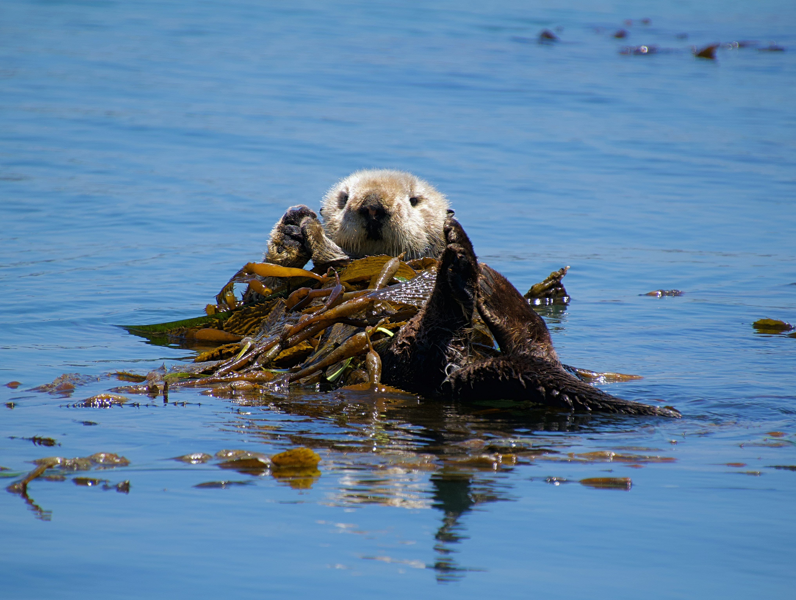
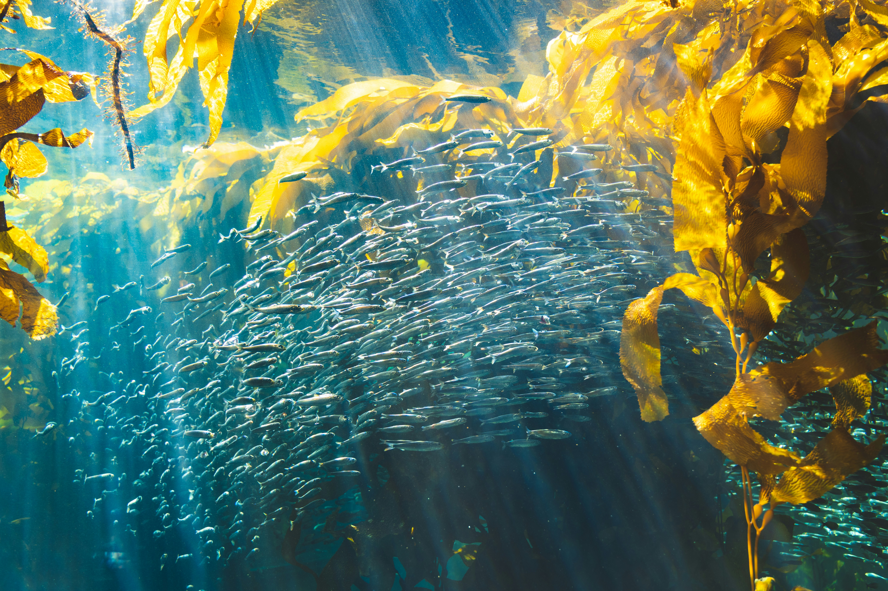
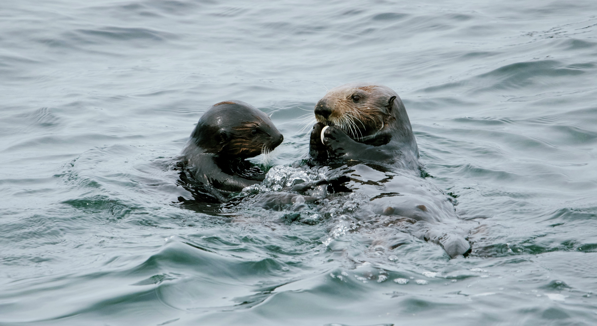

Holding Hands
Sea otters hold hands while sleeping to keep from drifting apart.
Learn More
Sea otters hold hands while sleeping to keep from drifting apart.
Learn More
They have up to 1 million hair follicles per square inch.
Learn More
Sea otters wrap themselves in kelp to stay in place while they sleep.
Learn More
Sea otters live among the giant kelp forests of Monterey Bay.
Explore
Meet rescued otters at the famous Monterey Bay Aquarium.
Explore
Watch sea otter pups in the ocean.
Explore
Learn how Monterey protects its sea otter population.
Explore